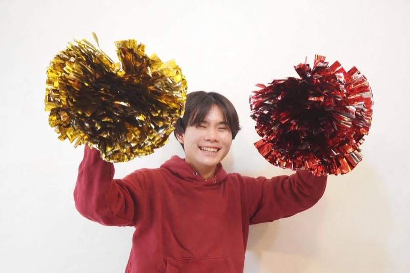

N
Representative
学生団体NEXY 代表
「『やりたい』を、ひとりにしない」を掲げ、中高生が交流し、社会とつながるコミュニティを運営しています。2025年12月に活動を始め、2026年2月に団体を設立しました。
NEXY Summit深夜の語り場あさげの若き情熱会（朝食会）Podcast

「やりたい」を普通に口に出せて、お互いに高め合える場所があったら最高だ。
その思いから、中高生が出会い、挑戦が続いていく場をつくっています。
神奈川県横浜市出身。現在は富山県富山市を拠点に活動しています。
中学の3年間をシンガポールで過ごす中で、日本では「出る杭は打たれる」ために、「やりたい」を口に出しにくいと感じました。夢や悩みを自由に語れる場所があれば、日本はもっと変わる。それが、今の活動の出発点です。
考えるよりも先に、まず動きます。一度動けば、もう後戻りはできません。立ち止まらないことを、いつも意識しています。
自慢よりも、夢を語りたい。威張らず、人から素直に学び、自分を成長させ続けることを大切にしています。
AIが広がる社会で、人ならではの魅力は「思い」だと考えています。ひとりの思いが次の人に連鎖していく社会をつくりたいです。
ひとりで始めたからこそ、多くの人を巻き込みます。その日限りで終わらせず、次につながる場をつくることを心がけています。
座右の銘は「当たり前を当たり前に」と「感謝を忘れずに」。支えてくれる人への感謝を、行動で返していきます。
今の自分のすごさではなく、つくりたい世界と、そのために今やっていることを語ります。
相手の言動を責める前に、その人の状況や前提を聞きます。
指摘を素直に受け取り、上下ではなく横で、仲間とともに伸ばし合います。
「『やりたい』を、ひとりにしない」を掲げ、中高生が交流し、社会とつながるコミュニティを運営しています。2025年12月に活動を始め、2026年2月に団体を設立しました。
2026年8月6日、東京たま未来メッセで開催。全国の高校生が集まるサミットを、高校生の運営メンバーとともにつくりました。
地方 × AI × 人材育成をテーマに、富山県高岡市を拠点として、地方の中小企業のAI活用を支援しています。
中学2年で、WROで出会った仲間とともに設立。子どもが「好き」を見つけて学べるサービス「ひきだしkids」を運営しています。
新規事業部で、子ども向けデジタル教育の現場責任者を務めています。
この頃からロボットやプログラミングに関心を持ちます。
オープンカテゴリー小学生部門。地球温暖化による海面上昇を防ぐロボットを制作し、英語でプレゼンしました。8歳での出場は最年少です。
食料危機をテーマに出場。国内大会で優勝し、2年連続で日本代表となりました。
子どもが「好き」を見つけて学べるサービス「ひきだしkids」を立ち上げました。
外部メディアに掲載された記事・動画です。
「何かに挑戦したい」「本気で語り合える仲間がほしい」高校生・大学生の方へ。
フォームからご応募いただければ、ハルタから直接ご連絡します。